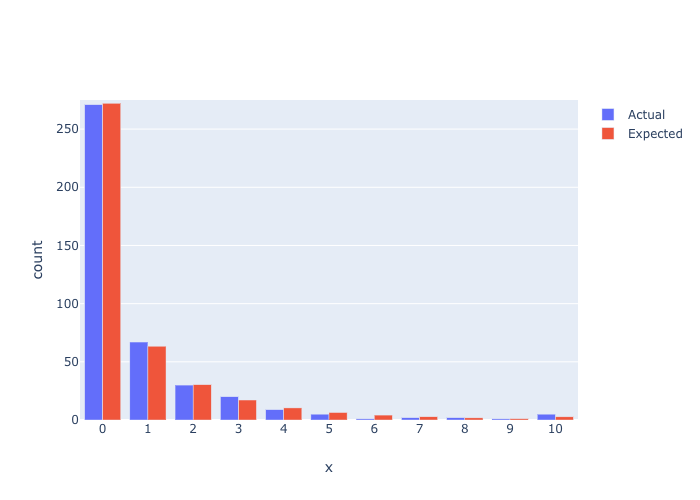

---
redirect_from:
  - "/prob-models/negative-binomial"
interact_link: content/prob-models/Negative-Binomial.ipynb
kernel_name: python3
kernel_path: content/prob-models
has_widgets: false
title: |-
  Negative-binomial
pagenum: 19
prev_page:
  url: /prob-models/shifted-Beta-Geometric.html
next_page:
  url: /prob-models/Beta-Binomial.html
suffix: .ipynb
search: modeling count data example

comment: "***PROGRAMMATICALLY GENERATED, DO NOT EDIT. SEE ORIGINAL FILES IN /content***"
---

    <main class="jupyter-page">
    <div id="page-info"><div id="page-title">Negative-binomial</div>
</div>
    
<div class="jb_cell">

<div class="cell border-box-sizing text_cell rendered"><div class="inner_cell">
<div class="text_cell_render border-box-sizing rendered_html">
<blockquote><p>For modeling count data..</p>
</blockquote>

</div>
</div>
</div>
</div>

<div class="jb_cell">

<div class="cell border-box-sizing code_cell rendered">
<div class="input">

<div class="inner_cell">
    <div class="input_area">
<div class=" highlight hl-ipython3"><pre><span></span><span class="kn">import</span> <span class="nn">numpy</span> <span class="k">as</span> <span class="nn">np</span>
<span class="kn">import</span> <span class="nn">pandas</span> <span class="k">as</span> <span class="nn">pd</span>
<span class="kn">from</span> <span class="nn">scipy.optimize</span> <span class="k">import</span> <span class="n">minimize</span>
<span class="kn">import</span> <span class="nn">os</span>
<span class="kn">from</span> <span class="nn">IPython.display</span> <span class="k">import</span> <span class="n">display</span><span class="p">,</span> <span class="n">Image</span>
<span class="kn">import</span> <span class="nn">plotly.graph_objs</span> <span class="k">as</span> <span class="nn">go</span>
</pre></div>

    </div>
</div>
</div>

</div>
</div>

<div class="jb_cell">

<div class="cell border-box-sizing code_cell rendered">
<div class="input">

<div class="inner_cell">
    <div class="input_area">
<div class=" highlight hl-ipython3"><pre><span></span><span class="k">def</span> <span class="nf">compute_probabilities</span><span class="p">(</span><span class="n">alpha</span><span class="p">,</span> <span class="n">r</span><span class="p">,</span> <span class="n">t</span><span class="p">,</span> <span class="n">num_bins</span><span class="p">):</span>
    <span class="sd">&#39;&#39;&#39;Compute the probability of a person landing in one of the discrete buckets&#39;&#39;&#39;</span>
    <span class="n">p</span> <span class="o">=</span> <span class="p">[(</span><span class="n">alpha</span> <span class="o">/</span> <span class="p">(</span><span class="n">alpha</span> <span class="o">+</span> <span class="n">t</span><span class="p">))</span><span class="o">**</span><span class="n">r</span><span class="p">]</span>
    <span class="k">for</span> <span class="n">x</span> <span class="ow">in</span> <span class="nb">range</span><span class="p">(</span><span class="mi">1</span><span class="p">,</span> <span class="n">num_bins</span><span class="o">-</span><span class="mi">1</span><span class="p">):</span>
        <span class="n">p</span><span class="o">.</span><span class="n">append</span><span class="p">(</span><span class="n">t</span> <span class="o">*</span> <span class="p">(</span><span class="n">r</span> <span class="o">+</span> <span class="n">x</span> <span class="o">-</span> <span class="mi">1</span><span class="p">)</span> <span class="o">/</span> <span class="n">x</span> <span class="o">/</span> <span class="p">(</span><span class="n">alpha</span> <span class="o">+</span> <span class="n">t</span><span class="p">)</span> <span class="o">*</span> <span class="n">p</span><span class="p">[</span><span class="n">x</span><span class="o">-</span><span class="mi">1</span><span class="p">])</span>
        
    <span class="c1"># add remaining probability to right censored cell</span>
    <span class="n">p</span><span class="o">.</span><span class="n">append</span><span class="p">(</span><span class="mi">1</span> <span class="o">-</span> <span class="n">np</span><span class="o">.</span><span class="n">sum</span><span class="p">(</span><span class="n">p</span><span class="p">))</span>

    <span class="k">return</span> <span class="n">p</span>

<span class="k">def</span> <span class="nf">log_likelihood</span><span class="p">(</span><span class="n">alpha</span><span class="p">,</span> <span class="n">r</span><span class="p">,</span> <span class="n">t</span><span class="p">,</span> <span class="n">values</span><span class="p">,</span> <span class="n">counts</span><span class="p">):</span>
    <span class="sd">&#39;&#39;&#39;Objective function that we need to maximize to get best alpha and r params&#39;&#39;&#39;</span>
    <span class="k">if</span> <span class="n">alpha</span> <span class="o">&lt;=</span> <span class="mi">0</span> <span class="ow">or</span> <span class="n">r</span> <span class="o">&lt;=</span> <span class="mi">0</span><span class="p">:</span>
        <span class="k">return</span> <span class="o">-</span><span class="mi">99999</span>
    <span class="n">probabilities</span> <span class="o">=</span> <span class="n">np</span><span class="o">.</span><span class="n">array</span><span class="p">(</span><span class="n">compute_probabilities</span><span class="p">(</span><span class="n">alpha</span><span class="p">,</span> <span class="n">r</span><span class="p">,</span> <span class="n">t</span><span class="p">,</span> <span class="nb">len</span><span class="p">(</span><span class="n">values</span><span class="p">)))</span>
    
    <span class="k">return</span> <span class="n">np</span><span class="o">.</span><span class="n">sum</span><span class="p">(</span><span class="n">np</span><span class="o">.</span><span class="n">log</span><span class="p">(</span><span class="n">probabilities</span><span class="p">)</span> <span class="o">*</span> <span class="n">np</span><span class="o">.</span><span class="n">array</span><span class="p">(</span><span class="n">counts</span><span class="p">))</span>

<span class="k">def</span> <span class="nf">maximize</span><span class="p">(</span><span class="n">values</span><span class="p">,</span> <span class="n">counts</span><span class="p">):</span>
    <span class="sd">&#39;&#39;&#39;Maximize log-likelihood by searching for best (alpha, r) combination&#39;&#39;&#39;</span>
    <span class="n">func</span> <span class="o">=</span> <span class="k">lambda</span> <span class="n">x</span><span class="p">:</span> <span class="o">-</span><span class="n">log_likelihood</span><span class="p">(</span><span class="n">x</span><span class="p">[</span><span class="mi">0</span><span class="p">],</span> <span class="n">x</span><span class="p">[</span><span class="mi">1</span><span class="p">],</span> <span class="mi">1</span><span class="p">,</span> <span class="n">values</span><span class="p">,</span> <span class="n">counts</span><span class="p">)</span>
    <span class="n">x0</span> <span class="o">=</span> <span class="n">np</span><span class="o">.</span><span class="n">array</span><span class="p">([</span><span class="mf">100.</span><span class="p">,</span> <span class="mf">100.</span><span class="p">])</span>
    <span class="n">res</span> <span class="o">=</span> <span class="n">minimize</span><span class="p">(</span><span class="n">func</span><span class="p">,</span> <span class="n">x0</span><span class="p">,</span> <span class="n">method</span><span class="o">=</span><span class="s1">&#39;Nelder-Mead&#39;</span><span class="p">,</span> <span class="n">options</span><span class="o">=</span><span class="p">{</span><span class="s1">&#39;xtol&#39;</span><span class="p">:</span> <span class="mf">1e-8</span><span class="p">,</span> <span class="s1">&#39;disp&#39;</span><span class="p">:</span> <span class="kc">False</span><span class="p">})</span>

    <span class="k">return</span> <span class="n">res</span><span class="o">.</span><span class="n">x</span>

<span class="k">def</span> <span class="nf">forecast</span><span class="p">(</span><span class="n">values</span><span class="p">,</span> <span class="n">counts</span><span class="p">,</span> <span class="n">t</span><span class="p">):</span>
    <span class="sd">&#39;&#39;&#39;Fits the nBD model to the data&#39;&#39;&#39;</span>
    <span class="c1"># Generate best alpha, r</span>
    <span class="n">alpha</span><span class="p">,</span> <span class="n">r</span> <span class="o">=</span> <span class="n">maximize</span><span class="p">(</span><span class="n">values</span><span class="p">,</span> <span class="n">counts</span><span class="p">)</span>
    
    <span class="c1"># Calculate probabilities</span>
    <span class="n">probabilities</span> <span class="o">=</span> <span class="n">compute_probabilities</span><span class="p">(</span><span class="n">alpha</span><span class="p">,</span> <span class="n">r</span><span class="p">,</span> <span class="n">t</span><span class="p">,</span> <span class="nb">len</span><span class="p">(</span><span class="n">values</span><span class="p">))</span>
    
    <span class="c1"># Scale expectations to population</span>
    <span class="k">return</span> <span class="n">probabilities</span> <span class="o">*</span> <span class="n">np</span><span class="o">.</span><span class="n">array</span><span class="p">([</span><span class="n">np</span><span class="o">.</span><span class="n">sum</span><span class="p">(</span><span class="n">counts</span><span class="p">)]</span> <span class="o">*</span> <span class="nb">len</span><span class="p">(</span><span class="n">probabilities</span><span class="p">))</span>


<span class="k">def</span> <span class="nf">fixed_forecast</span><span class="p">(</span><span class="n">values</span><span class="p">,</span> <span class="n">counts</span><span class="p">,</span> <span class="n">alpha</span><span class="p">,</span> <span class="n">r</span><span class="p">,</span> <span class="n">t</span><span class="p">):</span>
    <span class="sd">&#39;&#39;&#39;Forecasts with fixed alpha and r obtained from initial fit&#39;&#39;&#39;</span>
    <span class="c1"># Calculate probabilities</span>
    <span class="n">probabilities</span> <span class="o">=</span> <span class="n">compute_probabilities</span><span class="p">(</span><span class="n">alpha</span><span class="p">,</span> <span class="n">r</span><span class="p">,</span> <span class="n">t</span><span class="p">,</span> <span class="nb">len</span><span class="p">(</span><span class="n">values</span><span class="p">))</span>
    
    <span class="c1"># Scale expectations to population</span>
    <span class="k">return</span> <span class="n">probabilities</span> <span class="o">*</span> <span class="n">np</span><span class="o">.</span><span class="n">array</span><span class="p">([</span><span class="n">np</span><span class="o">.</span><span class="n">sum</span><span class="p">(</span><span class="n">counts</span><span class="p">)]</span> <span class="o">*</span> <span class="nb">len</span><span class="p">(</span><span class="n">probabilities</span><span class="p">))</span>
</pre></div>

    </div>
</div>
</div>

</div>
</div>

<div class="jb_cell">

<div class="cell border-box-sizing text_cell rendered"><div class="inner_cell">
<div class="text_cell_render border-box-sizing rendered_html">
<h2 id="Example">Example<a class="anchor-link" href="#Example"> </a></h2>
</div>
</div>
</div>
</div>

<div class="jb_cell">

<div class="cell border-box-sizing code_cell rendered">
<div class="input">

<div class="inner_cell">
    <div class="input_area">
<div class=" highlight hl-ipython3"><pre><span></span><span class="n">df</span> <span class="o">=</span> <span class="n">pd</span><span class="o">.</span><span class="n">read_csv</span><span class="p">(</span><span class="s1">&#39;../data/barchart-1.csv&#39;</span><span class="p">)</span><span class="o">.</span><span class="n">iloc</span><span class="p">[:,</span> <span class="p">:</span><span class="mi">2</span><span class="p">]</span>
</pre></div>

    </div>
</div>
</div>

</div>
</div>

<div class="jb_cell">

<div class="cell border-box-sizing code_cell rendered">
<div class="input">

<div class="inner_cell">
    <div class="input_area">
<div class=" highlight hl-ipython3"><pre><span></span><span class="c1"># in-sample fit</span>
<span class="n">forecast_series</span> <span class="o">=</span> <span class="n">forecast</span><span class="p">(</span><span class="n">df</span><span class="p">[</span><span class="s1">&#39;values&#39;</span><span class="p">],</span> <span class="n">df</span><span class="p">[</span><span class="s1">&#39;actual&#39;</span><span class="p">],</span> <span class="mi">1</span><span class="p">)</span>
<span class="n">insample_df</span> <span class="o">=</span> <span class="p">(</span>
    <span class="n">pd</span><span class="o">.</span><span class="n">DataFrame</span><span class="p">({</span><span class="s1">&#39;values&#39;</span><span class="p">:</span> <span class="n">np</span><span class="o">.</span><span class="n">arange</span><span class="p">(</span><span class="mf">0.0</span><span class="p">,</span> <span class="mf">11.0</span><span class="p">),</span>
                  <span class="s1">&#39;expected&#39;</span><span class="p">:</span> <span class="n">forecast_series</span><span class="p">})</span>
    <span class="o">.</span><span class="n">merge</span><span class="p">(</span><span class="n">df</span><span class="p">,</span> <span class="n">on</span><span class="o">=</span><span class="s1">&#39;values&#39;</span><span class="p">)</span>
    <span class="o">.</span><span class="n">assign</span><span class="p">(</span>
        <span class="n">chi_sq</span><span class="o">=</span><span class="k">lambda</span> <span class="n">x</span><span class="p">:</span> <span class="n">np</span><span class="o">.</span><span class="n">abs</span><span class="p">(</span><span class="n">x</span><span class="p">[</span><span class="s1">&#39;actual&#39;</span><span class="p">]</span> <span class="o">-</span> <span class="n">x</span><span class="p">[</span><span class="s1">&#39;expected&#39;</span><span class="p">])</span> <span class="o">/</span> <span class="n">x</span><span class="p">[</span><span class="s1">&#39;actual&#39;</span><span class="p">]</span>
    <span class="p">)</span>
              <span class="p">)</span>
</pre></div>

    </div>
</div>
</div>

</div>
</div>

<div class="jb_cell">

<div class="cell border-box-sizing code_cell rendered">
<div class="input">

<div class="inner_cell">
    <div class="input_area">
<div class=" highlight hl-ipython3"><pre><span></span><span class="n">insample_df</span>
</pre></div>

    </div>
</div>
</div>

<div class="output_wrapper">
<div class="output">

<div class="jb_output_wrapper }}">
<div class="output_area">


<div class="output_html rendered_html output_subarea output_execute_result">
<div>
<style scoped>
    .dataframe tbody tr th:only-of-type {
        vertical-align: middle;
    }

    .dataframe tbody tr th {
        vertical-align: top;
    }

    .dataframe thead th {
        text-align: right;
    }
</style>
<table border="1" class="dataframe">
  <thead>
    <tr style="text-align: right;">
      <th></th>
      <th>values</th>
      <th>expected</th>
      <th>actual</th>
      <th>chi_sq</th>
    </tr>
  </thead>
  <tbody>
    <tr>
      <th>0</th>
      <td>0.0</td>
      <td>272.202473</td>
      <td>271</td>
      <td>0.004437</td>
    </tr>
    <tr>
      <th>1</th>
      <td>1.0</td>
      <td>63.402661</td>
      <td>67</td>
      <td>0.053692</td>
    </tr>
    <tr>
      <th>2</th>
      <td>2.0</td>
      <td>30.480391</td>
      <td>30</td>
      <td>0.016013</td>
    </tr>
    <tr>
      <th>3</th>
      <td>3.0</td>
      <td>17.171105</td>
      <td>20</td>
      <td>0.141445</td>
    </tr>
    <tr>
      <th>4</th>
      <td>4.0</td>
      <td>10.382548</td>
      <td>9</td>
      <td>0.153616</td>
    </tr>
    <tr>
      <th>5</th>
      <td>5.0</td>
      <td>6.535131</td>
      <td>5</td>
      <td>0.307026</td>
    </tr>
    <tr>
      <th>6</th>
      <td>6.0</td>
      <td>4.221403</td>
      <td>1</td>
      <td>3.221403</td>
    </tr>
    <tr>
      <th>7</th>
      <td>7.0</td>
      <td>2.776654</td>
      <td>2</td>
      <td>0.388327</td>
    </tr>
    <tr>
      <th>8</th>
      <td>8.0</td>
      <td>1.850937</td>
      <td>2</td>
      <td>0.074532</td>
    </tr>
    <tr>
      <th>9</th>
      <td>9.0</td>
      <td>1.246589</td>
      <td>1</td>
      <td>0.246589</td>
    </tr>
    <tr>
      <th>10</th>
      <td>10.0</td>
      <td>2.730109</td>
      <td>5</td>
      <td>0.453978</td>
    </tr>
  </tbody>
</table>
</div>
</div>

</div>
</div>
</div>
</div>

</div>
</div>

<div class="jb_cell">

<div class="cell border-box-sizing code_cell rendered">
<div class="input">

<div class="inner_cell">
    <div class="input_area">
<div class=" highlight hl-ipython3"><pre><span></span><span class="n">fig</span> <span class="o">=</span> <span class="n">go</span><span class="o">.</span><span class="n">Figure</span><span class="p">(</span><span class="n">data</span><span class="o">=</span><span class="p">[</span>
    <span class="n">go</span><span class="o">.</span><span class="n">Bar</span><span class="p">(</span><span class="n">name</span><span class="o">=</span><span class="s1">&#39;Actual&#39;</span><span class="p">,</span> <span class="n">x</span><span class="o">=</span><span class="n">insample_df</span><span class="p">[</span><span class="s1">&#39;values&#39;</span><span class="p">],</span> <span class="n">y</span><span class="o">=</span><span class="n">insample_df</span><span class="p">[</span><span class="s1">&#39;actual&#39;</span><span class="p">]),</span>
    <span class="n">go</span><span class="o">.</span><span class="n">Bar</span><span class="p">(</span><span class="n">name</span><span class="o">=</span><span class="s1">&#39;Expected&#39;</span><span class="p">,</span> <span class="n">x</span><span class="o">=</span><span class="n">insample_df</span><span class="p">[</span><span class="s1">&#39;values&#39;</span><span class="p">],</span> <span class="n">y</span><span class="o">=</span><span class="n">insample_df</span><span class="p">[</span><span class="s1">&#39;expected&#39;</span><span class="p">])</span>
<span class="p">])</span>

<span class="n">fig</span><span class="o">.</span><span class="n">update_layout</span><span class="p">(</span><span class="n">title</span><span class="o">=</span><span class="s1">&#39;&#39;</span><span class="p">,</span>
                  <span class="n">xaxis_title</span><span class="o">=</span><span class="s1">&#39;x&#39;</span><span class="p">,</span>
                  <span class="n">yaxis_title</span><span class="o">=</span><span class="s1">&#39;count&#39;</span><span class="p">,</span>
                 <span class="n">annotations</span><span class="o">=</span><span class="p">[</span>
                    
                      <span class="p">],</span>
                  <span class="n">xaxis</span> <span class="o">=</span> <span class="nb">dict</span><span class="p">(</span>
                        <span class="n">tickmode</span> <span class="o">=</span> <span class="s1">&#39;linear&#39;</span><span class="p">,</span>
                        <span class="n">tick0</span> <span class="o">=</span> <span class="mi">0</span><span class="p">,</span>
                        <span class="n">dtick</span> <span class="o">=</span> <span class="mi">1</span>
                        <span class="p">)</span>
                 <span class="p">)</span>

<span class="c1"># Change the bar mode</span>
<span class="n">fig</span><span class="o">.</span><span class="n">update_layout</span><span class="p">(</span><span class="n">barmode</span><span class="o">=</span><span class="s1">&#39;group&#39;</span><span class="p">)</span>

<span class="n">fig</span><span class="o">.</span><span class="n">update_yaxes</span><span class="p">(</span><span class="nb">range</span><span class="o">=</span><span class="p">[</span><span class="mi">0</span><span class="p">,</span> <span class="mi">275</span><span class="p">])</span>

<span class="n">fig</span><span class="o">.</span><span class="n">show</span><span class="p">()</span>
</pre></div>

    </div>
</div>
</div>

</div>
</div>

<div class="jb_cell">

<div class="cell border-box-sizing code_cell rendered">
<div class="input">

<div class="inner_cell">
    <div class="input_area">
<div class=" highlight hl-ipython3"><pre><span></span><span class="n">Image</span><span class="p">(</span><span class="n">filename</span><span class="o">=</span><span class="s1">&#39;../images/nbd-figure-1.png&#39;</span><span class="p">)</span>
</pre></div>

    </div>
</div>
</div>

<div class="output_wrapper">
<div class="output">

<div class="jb_output_wrapper }}">
<div class="output_area">


<div class="output_png output_subarea output_execute_result">

</div>

</div>
</div>
</div>
</div>

</div>
</div>

 


    </main>
    